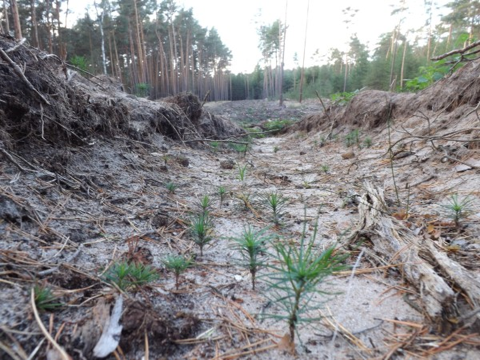
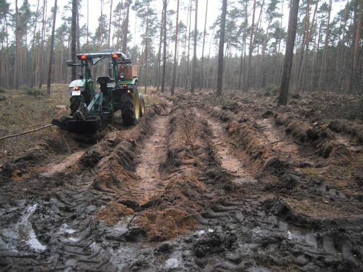
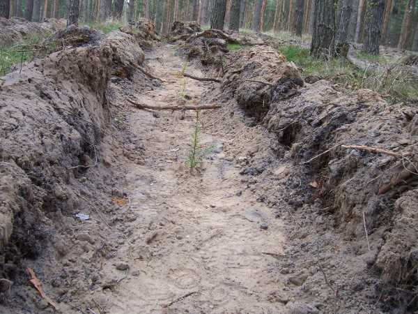
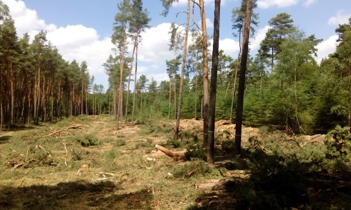
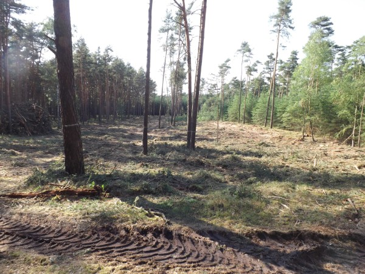
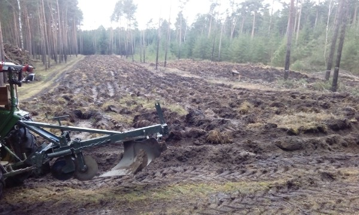
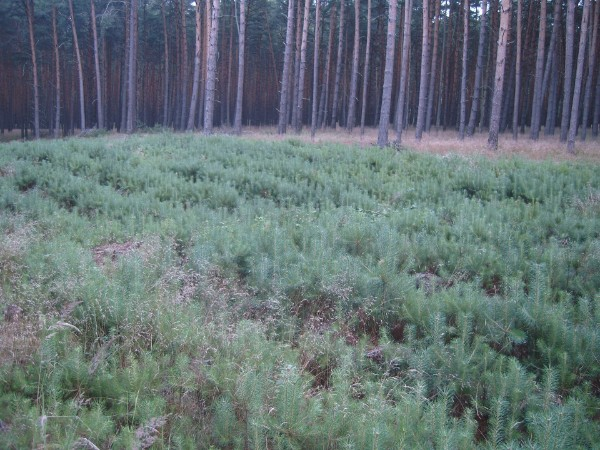
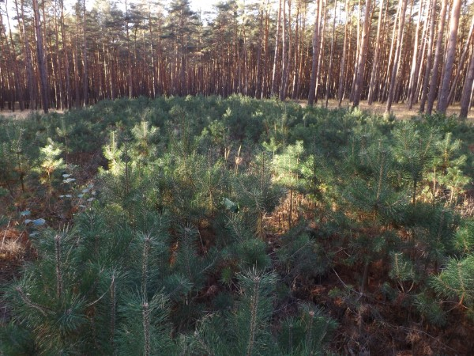
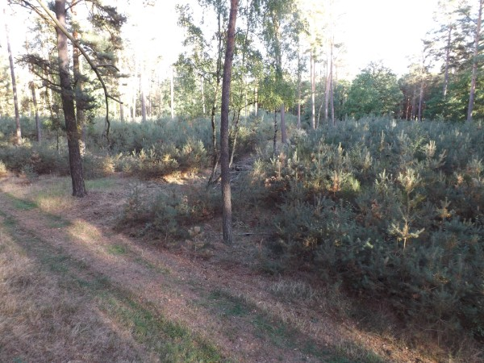
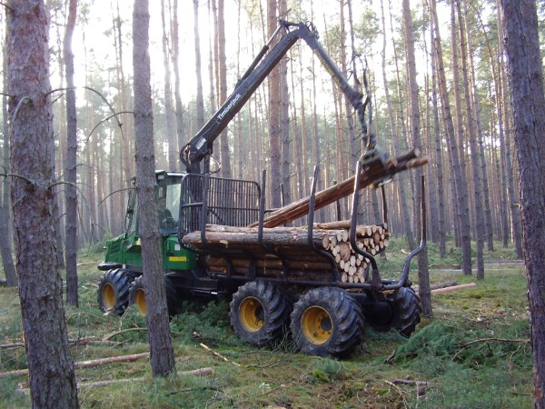

Naturverjüngung & Pflanzung
Ist ein Altbestand erntereif, wächst auf derselben Fläche neuer Wald. Wir setzen dabei vor allem auf Naturverjüngung.

Waldpflug
Der Forstpflug legt Streifen mit offenem Mineralboden an. Dort keimen Kiefernsamen, Jungpflanzen werden nicht überwuchert und kommen besser an Wasser. Nach rund 20 Jahren sind die Streifen kaum noch zu sehen.

Pflanzung
Soll ein Bestand auf eine andere Baumart umgebaut werden, pflanzen wir. Die Gräben ziehen wir am besten im Winter, dann speichert der Boden die Feuchtigkeit. Ohne Wildzaun braucht es mehr Pflanzen, Laubbäume wachsen ohne Zaun kaum an.

Kiefern-Naturverjüngung in fünf Schritten
Fläche planen
Bewährt haben sich 1 bis 1,5 Hektar. Größere Flächen werden zu trocken, kleinere zu schattig.

Gassen mit Altkiefern
Alle 20 Meter bleibt eine Fahrgasse. Genau dort lassen wir Altkiefern stehen. Sie spenden Schatten und Samen und werden später auf die Gasse gefällt, ohne den Jungwuchs zu beschädigen.
Ernten und aufräumen
Der Altbestand wird geerntet, die Fläche mit Maschine und von Hand geräumt. Die Stümpfe bleiben im Boden.

Pflügen
Im Januar oder Februar pflügen wir. Im Frühjahr fallen die Samen der Altkiefern auf den offenen Boden.

Wachsen lassen
Schon im ersten Herbst stehen Tausende Jungkiefern. Sie passen genau zum Standort, werden kaum verbissen und kosten nichts. Die Dürre 2018 haben sie deutlich besser überstanden als gepflanzte Kulturen. Hinderlich sind vor allem Traubenkirsche und Sandrohr.

Nach 2 Jahren 
Nach 4 Jahren 
Nach 8 Jahren
Fragen als Waldbesitzer? Rufen Sie an: 0172 1456171.

Holz direkt aus dem Wald
Ob Kaminholz, Bohlen nach Maß oder Rundholz in Lkw-Mengen: Rufen Sie uns an, wir beraten Sie gern.
Kontakt aufnehmen